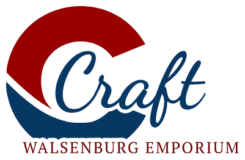
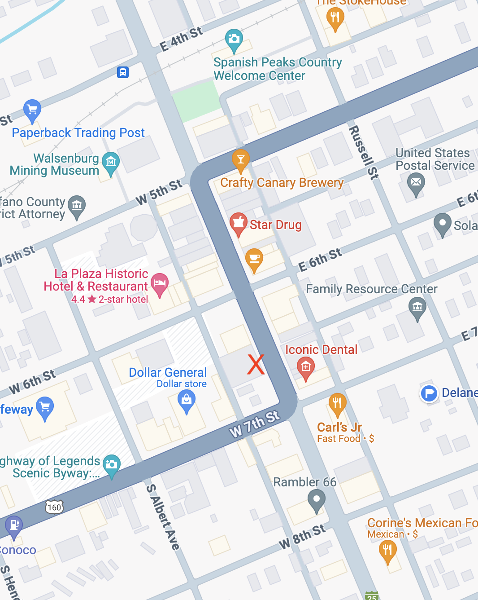

Welcome to the Walsenburg Craft Emporium

We are the Walsenburg Crafts Emporium. A local crafts supply shop working with the community to support your craft
interests. We plan to have supplies for all kinds of crafts from fiber to electronics. We are starting small, with yarn,
knitting and crochet supplies, and will expand as we can. We hope to hold classes, and community craft afternoons. Click on
the QR code, and let us know what kind of craft supplies you’d like to see us carry.
Located at 609 Main St. in Walsenburg Colorado, we are a participate in the Business Incubator program to help us get
started. Our hours will be limited the first few months with Friday and Saturday hours until after the holidays.
